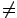
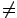

| Geometric Version of Shapiro Conjecture |
|
6 |
 H
 {0}
H
 {0}
Geometric Version of Shapiro Conjecture
Each of the (finitely many) p-planes meeting
mp different m-planes osculating the rational normal curve
in m+p space at real points
is real.
Consider the case when m=p=2
and work in projective 3-space.
This asserts that only real lines meet 4 lines tangent to
the rational normal curve at real points.
We now give a geometric demonstration of this case of the Shapiro
conjecture.